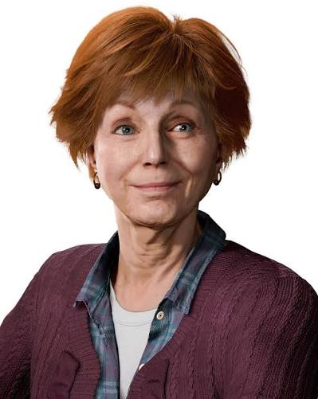

| Peter Parker / Spider-Man | The primary protagonist, an experienced 23-year-old hero balancing life and crime-fighting in New York City. | |
 | Mary Jane Watson | An investigative reporter who gathers information and helps uncover dangerous plots. |
 | May Parker | Peter's beloved aunt and the operations manager at the F.E.A.S.T. homeless shelter. |
 | Miles Morales | A Brooklyn teenager who becomes an important part of Peter's life and story. |
 | Otto Octavius / Doctor Octopus | Peter's former mentor and a brilliant scientist whose mechanical harness drives him to a path of vengeance against Oscorp. |
 | Martin Li / Mister Negative | A powerful enemy whose alter ego is Martin Li, a figure with a public charitable image. |
 | Norman Osborn | New York's mayor and a prominent public figure with ties to the city's larger conflicts. |